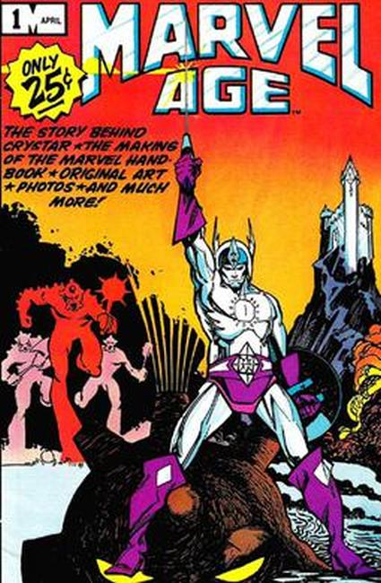
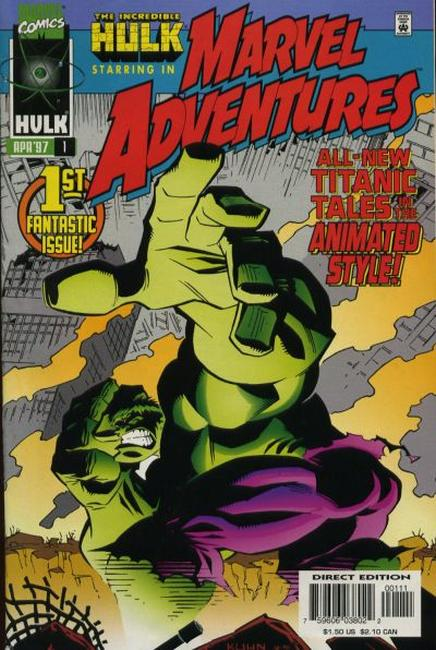

Marvel Age/Adventures
 
Series: reprint stories for kids since 1997
Publisher: Marvel
Not to be confused with the Marvel Age promotional magazine from 1983 to 1994.
Marvel Age changed names to Marvel Adventures, an imprint of Marvel Comics intended for younger audiences, including small children. Unlike the standard comics published by Marvel, which often take place in story arcs spanning several issues, each Marvel Adventures comic tells a standalone story. In April 2012 it was replaced by all new All Ages line tied to the Marvel Universe block on Disney XD.
All-new titanic tales in the animated style! This ongoing title presents all-new stories starring a rotating cast of Marvel super stars, with the first rock 'em, sock 'em issue spotlighting the Hulk! Fans of the Hulk animated series will go wild, while older readers who miss the classic, savage Hulk will have a ball with this one, too! Written by Ralph Macchio. Art by Andy Kuhn and Rob Stull. Cover by Andy Kuhn.
Marvel Digests were collections of Marvel Age/Adventures comic books compressed into smaller digest-sized books, rather than the original larger magazine form. Following theme with the Marvel Age comic books, they contained concept art sketches of characters in the back of the books.
Related Titles (behold the insanity that is the Marvel reprint/cash machine!):
- Marvel Age Fantastic Four Vol. 1: All for One (Marvel Age Fantastic Four #1-4)
- Marvel Age Fantastic Four Vol. 2: Doom (Marvel Age Fantastic Four #5-8)
- Marvel Age Fantastic Four Vol. 3: Return of Doctor Doom (Marvel Age Fantastic Four #9-12)
- Marvel Age Fantastic Four: Clobberin' Time (Marvel Age Fantastic Four Tales #1, Tales of the Thing #1-3, Spider-Man Team-Up Special #1)
- Marvel Age Hulk: Incredible (Marvel Age Hulk #1-4)
- Marvel Age Spider-Man Vol. 1 (Marvel Age Spider-Man #1-4)
- Marvel Age Spider-Man Vol. 2: Everyday Hero (Marvel Age Spider-Man #5-8)
- Marvel Age Spider-Man Vol. 3: Swingtime (Marvel Age Spider-Man #9-12)
- Marvel Age Spider-Man Vol. 4: The Goblin Strikes (Marvel Age Spider-Man #13-16)
- Marvel Age Spider-Man Vol. 5: Spidey Strikes Back (Marvel Age Spider-Man #17-20)
- Marvel Age Spider-Man Team-Up Vol. 1: A Little Help From My Friends (Marvel Age Spider-Man Team-Up #1-5
- Marvel Adventures Avengers Vol. 1: Heroes Assembled (Marvel Adventures Avengers #1–4)
- Marvel Adventures Avengers Vol. 2: Mischief (Marvel Adventures Avengers #5-8)
- Marvel Adventures Avengers Vol. 3: Bizarre Adventures (Marvel Adventures Avengers #9-12)
- Marvel Adventures Avengers Vol. 4: The Dream Team (Marvel Adventures Avengers #13-15, Marvel Adventures Giant-Size Avengers #1)
- Marvel Adventures Avengers Vol. 5: Some Assembling Required (Marvel Adventures Avengers #16-19)
- Marvel Adventures Avengers Vol. 6: Mighty Marvels (Marvel Adventures Avengers #20-23)
- Marvel Adventures Avengers Vol. 7: Weirder And Wilder (Marvel Adventures Avengers #24-27)
- Marvel Adventures Avengers Vol. 8: The New Recruits (Marvel Adventures Avengers #28-31)
- Marvel Adventures Avengers Vol. 9: The Times They Are A-Changin'(Marvel Adventures Avengers #32-35)
- Marvel Adventures Avengers Vol. 10: Invasion (Marvel Adventures Avengers #36-39)
- Marvel Adventures Fantastic Four Vol. 1: Family of Heroes (Marvel Adventures Fantastic Four #1–4)
- Marvel Adventures Fantastic Four Vol. 2: Fantastic Voyages (Marvel Adventures Fantastic Four #5–8)
- Marvel Adventures Fantastic Four Vol. 3: World's Greatest (Marvel Adventures Fantastic Four #9–12)
- Marvel Adventures Fantastic Four Vol. 4: Cosmic Threats (Marvel Adventures Fantastic Four #13–16)
- Marvel Adventures Fantastic Four Vol. 5: All 4 One, 4 For All (Marvel Adventures Fantastic Four #17-20)
- Marvel Adventures Fantastic Four Vol. 6: Monsters & Mysteries (Marvel Adventures Fantastic Four #21-24)
- Marvel Adventures Fantastic Four Vol. 7: The Silver Surfer (Marvel Adventures Fantastic Four #25-28)
- Marvel Adventures Fantastic Four Vol. 8: Monsters, Moles, Cowboys & Coupons (Marvel Adventures Fantastic Four #29-32)
- Marvel Adventures Fantastic Four Vol. 9: New York's Finest (Marvel Adventures Fantastic Four #33-36)
- Marvel Adventures Fantastic Four Vol. 10: Spaced Crusaders (Marvel Adventures Fantastic Four #37-40)
- Marvel Adventures Fantastic Four Vol. 11: Doomed If You Don't (Marvel Adventures Fantastic Four #41-44)
- Marvel Adventures Fantastic Four Vol. 12: Four-Three-Two-One (Marvel Adventures Fantastic Four #45-48)
- Marvel Adventures Hulk Vol. 1: Misunderstood Monster (Marvel Adventures Hulk #1-4)
- Marvel Adventures Hulk Vol. 2: Defenders (Marvel Adventures Hulk #5-8)
- Marvel Adventures Hulk Vol. 3: Strongest One There Is (Marvel Adventures Hulk #9-12)
- Marvel Adventures Hulk Vol. 4: Tales To Astonish (Marvel Adventures Hulk #13-16)
- Marvel Adventures Iron Man Vol. 1: Heart of Steel (Marvel Adventures Iron Man #1-4)
- Marvel Adventures Iron Man Vol. 2: Iron Armory (Marvel Adventures Iron Man #5-8)
- Marvel Adventures Iron Man Vol. 3: Hero by Design (Marvel Adventures Iron Man #9-12)
- Marvel Adventures Iron Man Vol. 4: Armored Avenger (Marvel Adventures Iron Man #13, Iron Man: Golden Avenger #1, Marvel Adventures Iron Man & Hulk: FCBD 2007, and Marvel Adventures Iron Man, Hulk, & Spider-Man: FCBD 2008)
- Marvel Adventures Spider-Man Vol. 1: The Sinister Six (Marvel Adventures Spider-Man #1–4)
- Marvel Adventures Spider-Man Vol. 2: Power Struggle (Marvel Adventures Spider-Man #5–8)
- Marvel Adventures Spider-Man Vol. 3: Doom with a View (Marvel Adventures Spider-Man #9–12)
- Marvel Adventures Spider-Man Vol. 4: Concrete Jungle (Marvel Adventures Spider-Man #13–16)
- Marvel Adventures Spider-Man Vol. 5: Monsters on the Prowl (Marvel Adventures Spider-Man #17-20)
- Marvel Adventures Spider-Man Vol. 6: The Black Costume (Marvel Adventures Spider-Man #21-24)
- Marvel Adventures Spider-Man Vol. 7: Secret Identity (Marvel Adventures Spider-Man #25-28)
- Marvel Adventures Spider-Man Vol. 8: Forces of Nature (Marvel Adventures Spider-Man #29-32)
- Marvel Adventures Spider-Man Vol. 9: Fiercest Foes (Marvel Adventures Spider-Man #33-36)
- Marvel Adventures Spider-Man Vol. 10: Identity Crisis (Marvel Adventures Spider-Man #37-40)
- Marvel Adventures Spider-Man Vol. 11: Animal Instinct (Marvel Adventures Spider-Man #41-44)
- Marvel Adventures Spider-Man Vol. 12: Jumping To Conclusions (Marvel Adventures Spider-Man #45-48)
- Marvel Adventures Spider-Man Vol. 13: Animal Attack! (Marvel Adventures Spider-Man #49-52)
- Marvel Adventures Spider-Man Vol. 14: Thwip! (Marvel Adventures Spider-Man #53-56)
- Marvel Adventures Iron Man/Spider-Man (Marvel Adventures Spider-Man #57, Marvel Adventures Iron Man #1, Iron Man #234, and Marvel Team-Up #9)
- Marvel Adventures Spider-Man Vol. 15: Peter Parker vs. The X-Men (Marvel Adventures Spider-Man #58-61)
- Marvel Adventures Spider-Man (vol. 2)
- Marvel Adventures Spider-Man: Amazing (Marvel Adventures Spider-Man vol. 2 #1-4)
- Marvel Adventures Spider-Man: Spectacular (Marvel Adventures Spider-Man vol. 2 #5-8)
- Marvel Adventures Spider-Man: Sensational (Marvel Adventures Spider-Man vol. 2 #9-12)
- Marvel Adventures Spider-Man: Friendly Neighborhood (Marvel Adventures Spider-Man vol. 2 #13-16)
- Marvel Adventures Spider-Man: Tangled Web (Marvel Adventures Spider-Man vol. 2 #17-20)
- Marvel Universe Spider-Man: Amazing Fantasy (Marvel Adventures Spider-Man vol. 2 #21-24)
- Marvel Adventures Super Heroes
- Marvel Adventures Spider-Man/Iron Man/Hulk: Triple Threat (Marvel Adventures Super Heroes #1-4)
- Marvel Adventures Thor Featuring Dr. Strange, Ant-Man And Captain America (Marvel Adventures Super Heroes #5-8)
- Marvel Adventures Thor & The Avengers (Marvel Adventures Super Heroes #9-12)
- Marvel Adventures Spider-Man & The Avengers (Marvel Adventures Super Heroes #13-16)
- Marvel Adventures Black Widow & The Avengers (Marvel Adventures Super Heroes #17-21)
- Marvel Adventures Super Heroes (vol. 2)
- Marvel Adventures Avengers: Iron Man (Marvel Adventures Super Heroes vol. 2 #1-4)
- Marvel Adventures Avengers: Thor (Marvel Adventures Super Heroes vol. 2 #5-8)
- Marvel Adventures Avengers: Hulk (Marvel Adventures Super Heroes vol. 2 #9-12
- Marvel Adventures Avengers: Thor & Captain America (Marvel Adventures Super Heroes vol. 2 #13-16)
- Marvel Universe Avengers: United (Marvel Adventures Super Heroes vol. 2 #17 & 19, and Marvel Adventures Avengers #1-2)
- Marvel Universe Avengers: Hulk & Fantastic Four (Marvel Adventures Super Heroes vol. 2 #21-24)
Note: Marvel Adventures Super Heroes #18 and 20 are not collected because they are reprints, of Marvel Adventures Iron Man #2 and Marvel Adventures Fantastic Four #10 respectively
- Marvel Adventures Avengers: Captain America (Marvel Adventures Super Heroes vol. 2 #8 & 12, Marvel Age
- Spider-Man Team-Up #2, and Captain America #255)
- Marvel Adventures Thor: Bringers of the Storm (Marvel Adventures Super Heroes #7 & 11 and Marvel
- Adventures Avengers #5 & 15)
- Marvel Adventures Thor/Spider-Man (Marvel Age Spider-Man Team-Up #4, Marvel Adventures Spider-Man #40,
- Marvel Team-Up #115-116, and Thor #391)
- Marvel Universe: Spider-Man and The Avengers (Marvel Adventures Avengers #8 and 15, Marvel Adventures
- Spider-Man #16 and Marvel Age Spider-Man #5)